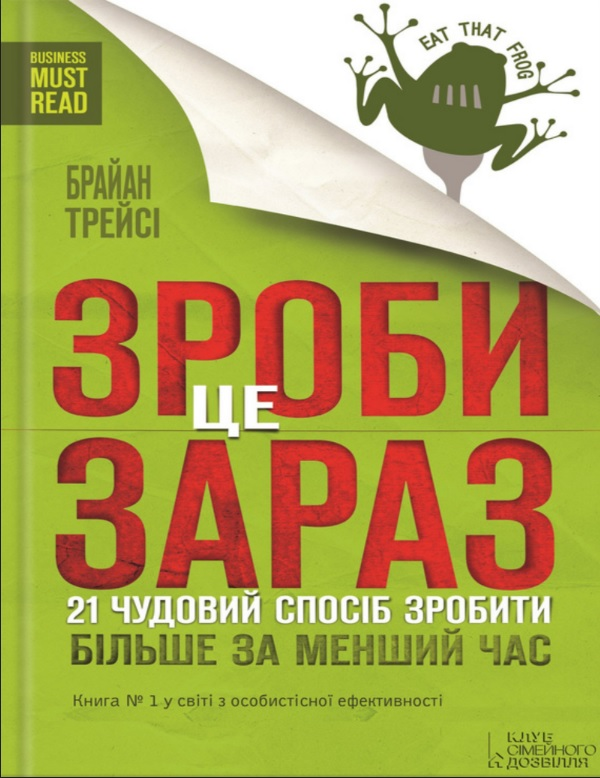

Зроби це зараз!!!
- Накрийте на стіл.
- Заздалегідь плануйте кожен день.
- До всього застосовуйте правило 80/20.
-
-
Визначити що головне кількість завдань чи важливість завдань
-
Зосередьтесь на діяльності, а не виконанні
- Найцінніші завдання – це ті, які є найскладнішими та найважчими.
- Мотивуйте себе
-
- Думайте про наслідки.
-
-
Приймайте кращі рішення стосовно часу
- Що чіткіше ви уявляєте свої прагнення на майбутнє, то більший вплив оця чіткість матиме на те, що ви зараз робите.
- Думайте про перспективу
- Ніколи не буде досить часу для виконання всього.
- Ретельно спланувати час наперед і вибудувати зручний буфер для компенсації неочікуваних втрат часу.
-
Три питання для максимальної продуктивності
- «Які дії мають для мене найвищу цінність?»
- «Що такого можу зробити я і ніхто, окріммене, що дійсно матиме велике значення?»
- «Як найкраще використати свій час саме зараз?»
-
- Займайтесь творчою прокрастинацією.
-
-
Приділяти більше уваги пріоритетним речам і робити швидше:
- слід визначити другорядні завдання також
- розставляйте правильні пріоритети
- Наперед плануйте своє щоденне навантаження.
- ви можете контролювати свій час та життя лише тією мірою, якою припиняєте діяльність низької цінності
- Для початку нової справи слід завершити (або припинити) стару. Щоб кудись зайти, слід звідкись вийти. Коли щось береш, обов’язково кладеш щось інше.
- Виділяйте невеликі завдання, які слід зробити зранку відразу, а потім повертайтесь до великих завдань і завершуйте їх.
- Кажіть люб’язно, проте твердо «ні» всьому, що не має великої цінності для вашого часу та життя.
-
Не зволікайте від виконань великих, важливих та цінних завдань, що можуть мати значні довготермінові наслідки для їхнього життя й кар’єри
- Не дивіться телевізор, проводьте натомість час із родиною
- Щоразу питайте себе: «Якби я вже цього не робив, знаючи те, що знаю тепер, то чи почав би я знову це робити?»
-
Постійно переглядайте своє життя й роботу задля виявлення завдань та діяльності, які займають багато часу і які ви можете полишити
- Не дивіться телевізор, проводьте натомість час із родиною
- читайте, тренуйтесь, робіть щось, здатне підвищити якість вашого життя.
- Подивіться на працю і визначте завдання, які можете передати чи скасувати, щоб вивільнити більше часу для насправді важливої роботи
- Оберіть принаймні один вид діяльності, який ви можете покинути просто зараз чи призупинити, доки не досягнете важливіших цілей
-
- Постійно використовуйте метод АБВГД.
-
потужну техніку встановлення пріоритетів: почніть із переліку всього, що вам потрібно зробити наступного дня. На папері перед початком роботи розставте А, Б, В, Г, Д перед кожним пунктом:
- Літерою А позначайте щось дуже важливе, те, що ви повинні обов’язково зробити. Це і є головна жаба у вашому житті!
- Літерою Б позначте завдання, які вам слід виконати. це лише пуголовки вашого робочого
- Завдання В – це те, що зробити було б добре, але необовязково
- Літерою Г позначте те, що можна доручити комусь іншому
- Під літерою Д ховаються завдання, які можна прибрати, бо вони не несуть ніякого значення
- Зосередьтесь на сферах ключових результатів.
- Скористайтеся законом трьох.
- Перед початком ретельно готуйтесь.
-
Перед початком ретельно готуйтесь. До початку роботи переконайтесь, що все потрібне у вас під рукою. Зберіть папери, інформацію, всі засоби та робочі матеріали, цифри, які можуть знадобитись, щоб почати роботу й продовжувати її.
- Створіть зручне робоче місце.
- Починайте працювати зараз, зробіть перший крок!
- Виконайте 80 % роботи правильно, потім коригуйте.
- Єдиним способом перебороти
- Рухайтесь від бочки до бочки.
-
Рухайтесь від бочки до бочки. Найбільше й найважливіше завдання можна виконати, якщо йти до цього крок за кроком.
- Найкращий спосіб перемогти прокрастинацію – це припинити думати про величезне завдання і зосередитись на єдиній дії.
- Виконуй одне завдання за раз, швидко і якісно, а потім – перехід до наступного завдання
- Оберіть будь-яку мету, завдання чи проект, виконання якого ви відтягували, і складіть перелік кроків
- Після цього візьміть і зробіть один крок негайно!
- Удосконалюйте свої ключові навички.
-
- Освоєння ключових навичок дозволяє більш ефективно виконувати свої завдання
- Постійне навчання та розвиток ключових навичок підвищує професійну компетентність
- Набуті знання та навички допомагають швидше та якісніше розв'язувати завдання в роботі
- Розвиток ключових навичок збільшує конкурентоспроможність на ринку праці та можливості кар'єрного зростання
- Зосередження на розвитку ключових навичок сприяє покращенню самооцінки та самопідвищенню
- Використовуйте свої особливі таланти.
-
- Розкриття своїх талантів допомагає знайти своє місце в житті та в професійній діяльності
- Використання особливих талантів підвищує мотивацію та задоволення від роботи
- Особливі таланти можуть бути ключовими факторами успіху в професійній діяльності
- Розвиток талантів дозволяє розвивати свої потенційні можливості та досягати більш високих результатів
- Використання особливих талантів сприяє покращенню самооцінки та підвищенню самовпевненості
- Визначте основні перепони.
-
Визначте труднощі й важкі моменти, внутрішні та зовнішні, які обмежують швидкість, із якою ви досягаєте найважливіших цілей, та зосередьтесь на їх подоланні.
- Між тим, хто ви є сьогодні, і вашою метою, якої прагнете досягти, є одна велика перепона, яку слід здолати, перш ніж дістатися заповітної мети. Ваше завдання – чітко її визначити
- Визначте чинник обмеження. Зосередьте свою розумову енергію на цій ключовій сфері. Це може стати найбільш продуктивним використанням вашого часу й талантів.
- Застосовуйте правило 80/20 до подолання перепон. Правило 80/20 можна також застосовувати до вашого життя й роботи.Це означає, що 80 % усіх перепон, тобто чинників, які стримують вас від досягнення мети, є внутрішніми, а решта 20 % чинників обмеження належать до зовнішніх і лежать поза вами та вашою організацією.
- Намагайтеся досягти точності. Формулювання перепон визначає стратегію, за допомогою якої ви будете їх пом’якшувати
- Тисніть на себе.
- Максимізуйте свої особисті сили.
- Мотивуйте себе діяти.
- Позбудьтесь технологічного рабства.
-
- Регулярно відключайтеся від різноманітних технологій і комунікаційних пристроїв
- Привчіть себе сприймати технологію як слугу, а не господаря. Зрозуміть, що технології існують, щоб вам допомагати, а не гальмувати
- Коли прокинетесь зранку боріться із бажанням увімкнути комунікаційні пристрої
- Навмисне створіть зони тиші у своєму житті, де час від часу зупиняйтесь і «слухайте тишу»
- Щотижня беріть один повний вихідний, протягом якого не вмикатимете комп’ютера, не перевірятимете повідомлень і не робитимете спроб тримати зв’язок зі світом технологій
- Діліть завдання на частини.
-
-
Вимагайте від себе закінчувати роботу.
- Початок і завершення одного невеликого завдання мотивує вас очинати й завершувати наступну частину
- Відразу починайте працювати, не тягніть кота за хвіст.
-
- Створюйте великі блоки часу.
- Розвиньте відчуття крайньої необхідності.
-
- Не зволікайте. «Слушний час» може ніколи не настати
- Одним зі способів, що сприятиме виникненню куражу, є розвиток відчуття крайньої необхідності
- Чим швидше рухаєтесь, тим більшого навчаєтесь і більше досвіду набуваєте
- Одним із найпростіших способів розпочати роботу є постійно повторювати собі: "Зроби це негайно!"
- Виконуйте завдання по одному.